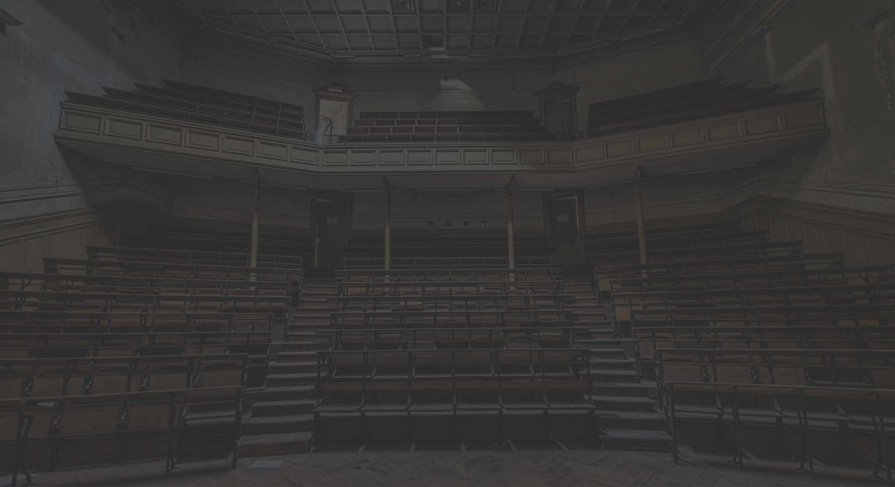
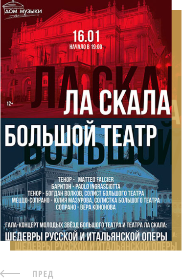
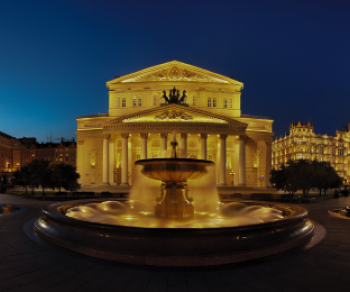

| ГЛАВНАЯ |
О ТЕАТРЕ |
НАШИ ПОСТАНОВКИ |
ПАРТНЕРЫ ТЕАТРА |
КОНТАКТЫ |
БОЛЬШОЙ ТЕАТР
Большо́й теа́тр — петербургский театр, существовавший в 1784—1886 годах,
с 1886 года — Петербургская консерватория. Первое постоянное в
Санкт-Петербурге, крупнейшее в России и одно из крупнейших театральных
зданий в Европе XVIII.

Самый лучший театр СПБ
Как свидетельствуют архивные документы, первое каменное
здание Большого театра начали возводить в 1775 году по
проекту Антонио Ринальди. В дальнейшем, после того как
Ринальди упал с лесов и не мог лично наблюдать за ходом
работ, Екатерина II поручила немецкому театральному
декоратору и архитектору Людвигу Филиппу Тишбейну создать
новый проект театра, который и был воплощён архитекторами
Ф. В. фон Бауром и М. А. Деденёвым. Открытие его состоялось в
1783 году, хотя, основываясь на других свидетельствах, годом
открытия можно считать 1784 год.


+7 (812) 123-45-55
+7 (812) 123-45-66
INFO@THEATER.RU
Г. САНКТ-ПЕТЕРБУРГ, НЕВСКИЙ 140
| Имя |
Компания |
Сообщение |
| Телефон |
E-mail |
* Ваши данные не будут переданы третьим лицам, 100%
вероятность. Конфиденциальность мы гарантируем, и защищаем
персональные данные согласно законку ФЗ-52.
(с) Все права защищены. Большой театр. 2020